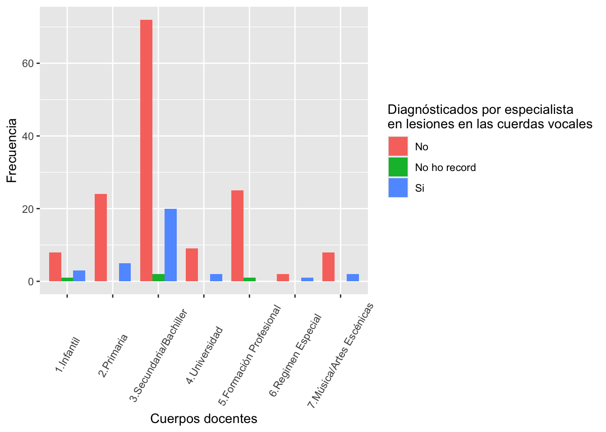

Síntomas vocales en profesores
20582- Análisis de Datos para el GMAT
Presentación del informe
El git es Grupo REBM . Nuestro grupo está compuesto por cuatro integrantes: Biel Bauzá, Eulàlia Tous, Marc Arrom i Rebeca Payá.
En este informe estudiaremos los resultados de la encuesta sobre salud vocal relizada por los investigadores Daniel Covacho, Esperanza Mulet i Pilar Riera sobre los síntomas vocales del profesorado. Nosotros nos dedicaremos a responder la pregunta dos: “¿Hay mayor incidencia de síntomas vocales en maestras de infantil?”. Para ello reestructuaremos los datos de manera que nos sea más fàcil trabajar con ellos.
Por otro lado, también debemos calcular el índice de calidad de voz (VHI). Para ello, vamos a seleccionar las variables desde la 28 a la 37, las cuales son las que utilizaremos para cuantificar nuestro índice de calidad de voz, para convertirlas en cuantitativas discretas y a sumarlas para obtener el índice VHI.
Lectura y limpieza de los datos
Primeramente, leeremos los datos del fichero “Salut_Vocal_anonimizada.csv” y cambiaremos los nombres de las variables a unas que nos resulten más cómodas para trabajar con ellas.
Podemos observar que hay 185 respuestas y 37 variables. Vamos a limpiar los nombres de las variables y a convertir las variables categóricas en factores, a excepción de las variables “importancia_voz”, “importancia_deporte” y “dieta_saludable” que las dejamos como variables cuantitativas discretas.
A continuación, calcularemos el índice de calidad de voz (VHI) como hemos mencionado anteriormente, sumando todos los valores de las columnas seleccionadas como indicadores del susodicho, estas son desde la 28 hasta la 37. Primero deberemos convertirlas en variables cuantitativas discretas.
Por último, vamos a añadir la variable VHI al dataframe original y a eliminar las variables de la 28 a la 37.
¿Hay mayor incidencia de síntomas vocales en maestras de infantil?
Al tener ya los datos limpios y homogeneizados podemos pasar a la pregunta particular que le ha tocado a nuestro grupo, la pregunta 2, la cual es enunciada en el título.
Podemos ver como en total hay 20 “profesiones” lo qual no ayudará para representarlo gráficamente, agrupemos algunas profesiones.
Podríamos seprarlo en Infantil, Primaria, Secundaria/Bachiller, Universidad, Formación Professional, Música/Artes Escénicas y Régimen Especial. Para hacerlo usaremos mutate.
Ahora solo tenemos las 7 categorías de profesores agrupadas, podemos hacer un gráfico para ver las distribuciones según si algun médico especialista le ha diagnosticado alguna lesión a las cuerdas vocales:
Añadir tabla de proporciones
proporciones_problemas <- sub_data_limpia %>%
group_by(cuerpo_docente) %>% # Agrupar por factores
summarise(
total_docentes = n(),
problemas_si = sum(diagnostico_especialista == "Si"), # Cantidad que respondió "sí"
probelmas_ns = sum(diagnostico_especialista == "No ho record"), # Cantidad que respondió "No ho record"
problemas_no = sum(diagnostico_especialista == "No"), # Cantidad que respondió "no"
prop_si = round(problemas_si / total_docentes, 3), # Proporción de "sí"
prop_no = round(problemas_no / total_docentes, 3) # Proporción de "no"
)
names(proporciones_problemas) <- c("CuerpoDocente", "Total", "Problemas: Si", "Problemas: NS", "Problemas: No", "Proporcion: Si", "Proporcion: No")
proporciones_problemas$CuerpoDocente <- factor(proporciones_problemas$CuerpoDocente,
levels = c("Infantil", "Primaria", "Secundaria/Bachiller", "Universidad", "Formación Profesional", "Regimen Especial", "Música/Artes Escénicas"))
proporciones_problemas <- proporciones_problemas %>% arrange(CuerpoDocente)
# Mostrar las proporciones
proporciones_problemas# A tibble: 7 × 7
CuerpoDocente Total `Problemas: Si` `Problemas: NS` `Problemas: No`
<fct> <int> <int> <int> <int>
1 <NA> 12 3 1 8
2 <NA> 29 5 0 24
3 <NA> 94 20 2 72
4 <NA> 11 2 0 9
5 <NA> 26 0 1 25
6 <NA> 3 1 0 2
7 <NA> 10 2 0 8
# ℹ 2 more variables: `Proporcion: Si` <dbl>, `Proporcion: No` <dbl>##Comentari Aquí faltaria comentar el que podria significar, si volem fer alguna inferència hem de comparar \(p_i\) on cada un d’aquests valors seria la porbabilitat de tenir un problema, crec que podem argumentar que amb la poca quantitat de gent no es pot fer cap inferència de pes